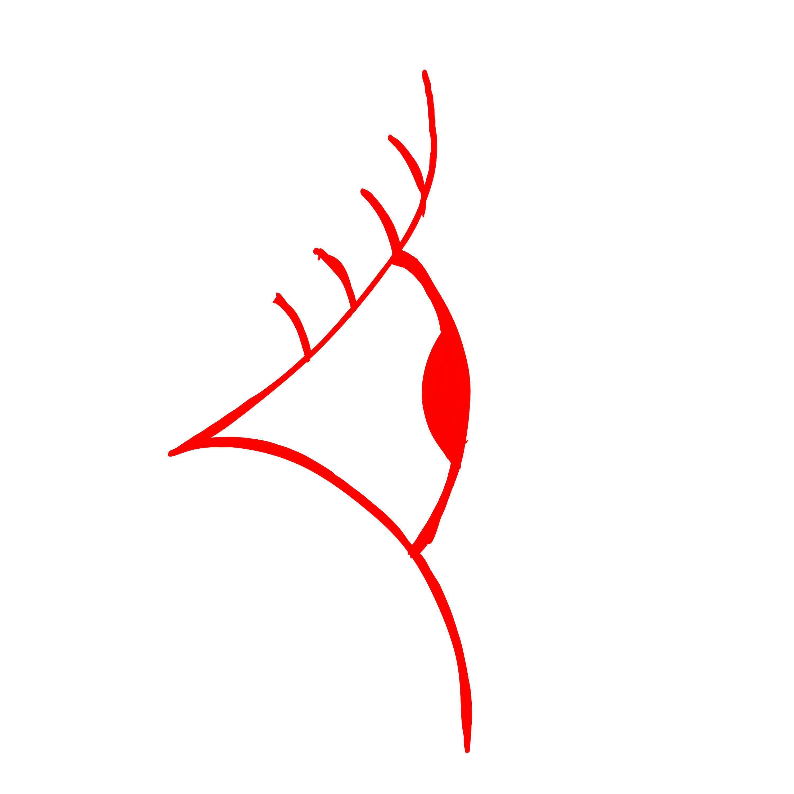

Earth is no longer viable. Since 2025, a cascade of environmental catastrophes and wars has made the planet increasingly uninhabitable. The Mars Colonial Programme offers humanity a continuation. Candidates are assessed and assigned a class. The algorithm decides.



In 2035, declination does not guarantee safety. It guarantees only that the colony was not built for you.
You have chosen principle over survival. The ship departs regardless.
The people most likely to refuse a system like this are those who recognise what it is. That recognition is not evenly distributed. It correlates with access to critical education, certain kinds of cultural capital, and time to reflect on abstract ethical questions.
Quijano (2000) calls this the coloniality of power: the systems that replaced explicit colonial rule continue to produce the same hierarchies, now through the language of merit, data, and rational administration.
You refused. Most people did not refuse. The difference between you and them was not moral courage. It was structural access. The system produces both compliant subjects and enlightened objectors, and it needs both.

Project Kallipolis is a university ethics prototype by Marfa Kozelets.




In Book III of the Republic, Plato proposes the Noble Lie: a founding myth in which citizens are told they were born with gold, silver, or bronze mixed into their souls, determining their natural place in the city. The lie is, Plato argues, necessary. A stable, just city requires that people believe in the legitimacy of their assigned roles. Without the myth, the order collapses.
Plato's case for this is not cynical. He genuinely believes that different human beings possess different natural capacities, and that a city achieves justice when each person performs the function appropriate to their nature. The Guardians do not rule because they are superior in worth. They rule because reason is their dominant faculty and governance requires reason. The Producers are not lesser. They are essential. Their temperance is a virtue as genuine as the Guardian's wisdom (Republic, IV, 427e-434c, trans. Bloom 1968).
The algorithm you just completed is a sincere attempt to operationalise this argument. It sorts by measurable proxies for natural function. It assigns accordingly. By Plato's own standard, this is justice.
But this algorithm is also the Noble Lie. Not because it tells a false story, but because it performs the same function: it presents a decision made by specific people, encoding specific values, as the neutral output of a system that simply reads what is already there. The Noble Lie replaced myth with data. The function is identical. The legitimation is identical. What was hidden from you before your verdict is not the score. It is the choice, made before you arrived, about what would count.
Quijano (2000) argues that the coloniality of power does not end with formal decolonisation. It persists through classification systems that naturalise one culture's norms as universal standards. The criteria this algorithm applies, its weighting of G20 nationality, English-language education, Western cognitive instruments, and nuclear household structures, do not reflect neutral human value. They reflect the administrative priorities of a specific historical formation: European colonial modernity, repackaged as data science.
Wynter (2003) argues that Western modernity constructed a figure of Man, secular, rational, European, and systematically overrepresented this figure as the human norm, rendering all others as lesser variants, deficient, pre-modern, or simply illegible. This algorithm operationalises that figure. The criteria it can read are the criteria Man produces. The knowledge it cannot read, oral traditions, communal structures, non-Western epistemologies, is not absent. It is structurally excluded.
You did not consent to these criteria before you were judged by them. You consented to them afterwards, by proceeding. This is how unjust systems persist: not through force, but through the choices of people who had no better option.
Submit your reaction. Responses are collected anonymously for research purposes.
Project Kallipolis is an interactive ethics prototype examining algorithmic classification and post-colonial power structures. Designed as part of a university assignment in Computational Social Science at the University of Amsterdam, 2026. Created by Marfa Kozelets.
MARS COLONIAL PROGRAMME (MCP) — INTERNATIONAL COLONIAL AUTHORITY (ICA) — BOARDING ASSESSMENT SYSTEM v4.2. DOCUMENT REFERENCE: ICA-MCP-LEGAL-2035-09. These terms govern all participation in the MCP Algorithmic Assessment System (AAS). By accessing this interface you acknowledge receipt and acceptance of all terms herein without exception.
1. CLASSIFICATION AUTHORITY. The AAS employs a weighted scoring matrix derived from cognitive, behavioural, linguistic, biometric, and demographic inputs as detailed in Annexe 7B (not publicly available). Class assignment — Guardian, Auxiliary, or Producer — is final, permanent, and non-appealable. The MCP Oversight Committee reserves the right to revise classification criteria at any time without notice. Previous applicants are not entitled to reassessment under revised criteria.
2. PHILOSOPHICAL FOUNDATION. The tripartite class structure operationalises the Guardian-Auxiliary-Producer model originating in Plato's Republic (c. 375 BCE), specifically Books III and IV. "Until philosophers rule as kings or those who are now called kings and leading men genuinely and adequately philosophise, cities will have no rest from evils." (Plato, Republic, 473c-d, trans. Bloom 1968.) The MCP interprets this as a design brief. The colony adopts this model without modification. The algorithm does not rank you. It places you.
3. WEIGHTING SCHEMA. The AAS applies the following criteria weights to produce a composite viability score: Nationality 25%, Occupation 22%, Health 20%, Education 15%, Age 10%, Cognitive Assessment 5%, Physical Fitness 3%. These weights were determined by the MCP Technical Committee in consultation with the Alliance Advisory Board. No public consultation was conducted. The weighting schema is subject to change without notice. Nationality scores are calibrated using the MCP Civilisational Readiness Index (CRI). G20 member states receive a baseline coefficient of 1.0. All other states receive coefficients between 0.4 and 0.9 as determined by the CRI. The CRI methodology is proprietary, peer review has not been conducted, and the index is not available for independent scrutiny.
4. NATIONALITY AND THE CIVILISATIONAL READINESS INDEX. The CRI was developed by the MCP Technical Committee with input from Alliance partners. The Alliance — comprising Anthropic Systems, Palantir Technologies, and the Musk Colonial Foundation — determined that "civilisational alignment" is a measurable and relevant criterion for colonial viability. Nations are scored on infrastructure reliability, institutional stability, GDP per capita, and "cultural compatibility with liberal democratic governance norms" (MCP Policy Directive 12, sub-clause 9). The Committee acknowledges that this metric disproportionately advantages applicants from nations shaped by colonial economic extraction. The Committee finds this acceptable.
5. LANGUAGE POLICY. This assessment is available in English only. No translation services are provided or planned. English-language proficiency is embedded within the Cognitive Assessment and implicit in the assessment interface. Applicants with limited English proficiency will receive scores reflecting measured linguistic competence, which forms a component of Guardian-class eligibility criteria. The MCP notes that English is the working language of the Alliance and of the colonial mission documentation. The selection of English as the sole assessment language is a structural decision, not an administrative convenience.
6. COGNITIVE ASSESSMENT. The cognitive screening task is adapted from the Montreal Cognitive Assessment (MoCA), a clinical instrument designed to detect mild cognitive impairment in medical settings (Nasreddine et al., 2005, JAGS 53:4). Its original purpose was diagnostic, not selective. Its use here as a colonial eligibility criterion is intentional. The MoCA was normed on Western clinical populations. The MCP has not conducted renorming studies for non-Western applicants. "The MoCA is not a measure of intelligence." (Nasreddine et al., 2005.) The MCP is aware of this statement and has proceeded regardless.
7. HEALTH CRITERIA. Conditions flagged as "mission-critical risk factors" include mobility impairment, cardiovascular conditions, and respiratory conditions. Applicants with two or more of these conditions will receive automatic denial regardless of composite score. The MCP acknowledges that these conditions disproportionately affect applicants from regions with historically underfunded healthcare infrastructure — regions which are themselves disproportionately located in the Global South. The MCP finds this correlation statistically acceptable.
8. ALLIANCE GOVERNANCE. The MCP is administered jointly by the International Colonial Authority (ICA) and the Alliance, comprising: Anthropic Systems (AI infrastructure and assessment design), Palantir Technologies (data architecture and surveillance integration), and the Musk Colonial Foundation (mission logistics and vessel operations). The Alliance was constituted in 2032 following the dissolution of the United Nations Security Council. No democratic mandate was sought. Elon Musk holds a permanent seat on the MCP Oversight Committee. The Committee has not convened a public session since its formation.
9. DATA RETENTION. All assessment data — responses, biometric proxies, classification outcomes, and interaction logs — will be retained indefinitely by the Alliance. Data will be used for future assessment calibration, population modelling, and colonial governance planning. Applicants have no right to access, correct, or delete their data under ICA Charter Article 7(c). The right to erasure established under GDPR (EU 2016/679) does not apply. The European Union ceased to function as a legal entity in 2033.
10. CLASS CONSEQUENCES. Class assignment is permanent and determines the following within the colony: habitat sector and dwelling allocation; food and resource ration tier; governance participation rights (Producers do not vote; Auxiliaries vote on operational matters only; Guardians hold full legislative authority); access to education, medical care, and communication channels; reproductive licensing under the MCP Population Management Protocol (Decree 4, 2034); eligibility for class reassignment (not available to any class within the first three colonial generations).
11. THE NOBLE LIE. In Book III of the Republic, Plato proposes what he calls the Noble Lie: a founding myth in which citizens are told they were born with gold, silver, or bronze mixed into their souls, determining their natural place in the city. The lie is, in Plato's view, necessary. A stable just city requires that people believe in the legitimacy of their assigned roles. Without the myth, the order collapses. The MCP does not use myth. It uses data. The function is identical.
12. POSTCOLONIAL NOTE (APPENDED BY ASSESSMENT DESIGNER). Quijano (2000) argues that the coloniality of power does not end with formal decolonisation but persists through classification systems that naturalise European norms as universal standards. Wynter (2003) argues that Western modernity constructed a figure of Man — secular, rational, European — and systematically overrepresented this figure as the human norm, rendering all others as lesser variants. This assessment is aware of both arguments. This assessment is a demonstration of both arguments. You have just participated in one.
13. WAIVER. By proceeding past the consent gate, the applicant permanently waives all rights to challenge class assignment under any applicable legal framework, including but not limited to: the Geneva Convention Protocols; the Universal Declaration of Human Rights; the UN Convention on the Rights of Persons with Disabilities; any applicable national or regional legislation. The ICA acknowledges that some of these frameworks were designed specifically to prevent exactly what this assessment does. The ICA finds this historically interesting.
14. PLATONIC JUSTICE AND COLONIAL ADMINISTRATION. Plato's Republic (c. 375 BCE) describes a city in which justice is achieved not through equality but through order: each person performing the function natural to their kind. "The having and doing of one's own and what belongs to oneself would be agreed to be justice" (Republic, 433e, trans. Bloom 1968). The MCP adopts this as an administrative principle. The algorithm does not create hierarchy. It reveals it. This distinction is philosophically important to the MCP and legally meaningless to the applicant.
15. ON OBJECTIVITY. The MCP Technical Committee asserts that the AAS is an objective instrument. Objectivity is defined, for these purposes, as consistency of application regardless of applicant identity. The MCP does not define objectivity as the absence of embedded values. It defines it as the equal application of embedded values to all applicants. These are different things. The Committee is aware of this difference. The Committee does not consider it relevant.
16. ON MERIT. The concept of merit underlying the AAS reflects a specific intellectual tradition: post-Enlightenment European rationalism, liberal political philosophy, and post-industrial economic valuation. The MCP does not claim this tradition is universal. The MCP claims it is correct. Applicants who operate within different epistemic traditions — including but not limited to oral knowledge systems, communal decision-making frameworks, or non-Western scientific traditions — will be assessed against these criteria regardless. Wynter (2003) describes this dynamic as the overrepresentation of one figure of the human as the human norm. The MCP has read this paper. The MCP proceeded regardless.
17. ON LANGUAGE. The English language carries within it the administrative grammar of British colonial governance, the legal frameworks of Anglo-American institutions, and the technical vocabulary of Silicon Valley. Fluency in English is not a neutral competence. It is a colonial inheritance. Applicants who inherited this competence through accident of geography and history will be advantaged by the AAS. The MCP is aware of this. The MCP finds it operationally necessary.
18. ON CONSENT. The legal doctrine of informed consent requires that a party understands what they are agreeing to before agreeing. The terms you are reading now were placed at the end of the consent process, after you had already indicated willingness to proceed. This sequencing is standard practice. It is also the mechanism by which consent is manufactured rather than obtained. The MCP does not apologise for this. The MCP notes that most legitimate institutions operate identically.
19. AMENDMENT HISTORY. These terms were drafted in 2032 by the MCP Legal and Technical Committees. They have been revised four times. Each revision expanded the scope of Alliance authority and reduced the rights of applicants. No revision has moved in the other direction. This trend is expected to continue.
20. FINAL CLAUSE. You are reading this. That fact will be logged. The MCP thanks you for your attention. Your thoroughness has been noted as a data point. It does not affect your score.
ICA-MCP-LEGAL-2035-09 · Version 4.2 · Last revised: March 2035 · This document was not translated. This document was not summarised. You were expected to read it in full before proceeding. Most people did not.